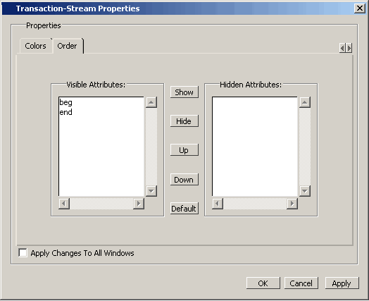

You can use the
GUI (or the tr order command) to change the order of transaction
attributes and hide/show attributes in the stream.
Procedure
- Right-click a transaction
or stream name to open a popup menu.
- Select Transaction Properties
to open the Transaction-Stream Properties dialog box.
- Select the Order tab
(Figure 1).
Figure 1. Transaction-Stream
Properties Dialog Box
- Select the attribute from
the list of visible attributes and select:
Show —
To display currently hidden attributes in stream
Hide —
To hide attribute from view in the stream
Up —
To move attribute up in the stream up
Down —
To move down
Default —
To restore original view
- Do either of the following: